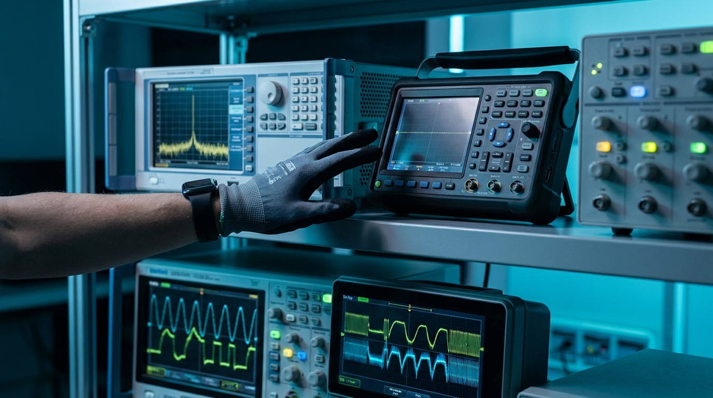
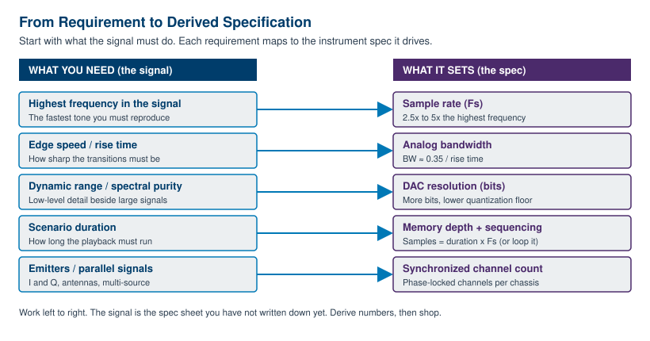
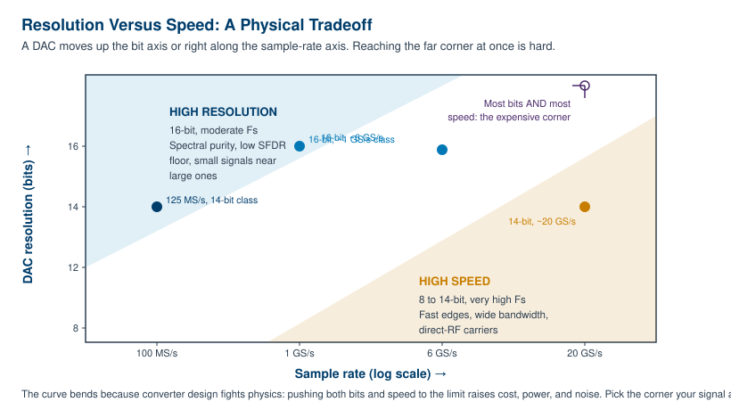

Chapter 9: Selecting an Arbitrary Waveform Generator

An arbitrary waveform generator is one of the more open-ended instruments on a bench, and that openness is exactly what makes it hard to buy. A power meter measures power. A counter counts. An AWG, by contrast, is asked to be almost anything, which means the specification sheet can run to two pages and every number on it looks important. The trap is to start by comparing instruments. The discipline is to start by describing your signal, then let the signal tell you which numbers actually matter and which are marketing.
This chapter is the practical buyer's chapter. It walks the path a working engineer should take: define the signal, convert that definition into hard requirements, and only then map requirements onto specifications you can shop against. Get the order right and you avoid the two classic mistakes, buying far more instrument than the job needs, or buying an instrument that looks impressive and quietly fails the one requirement that mattered.
9.1 Start With the Signal, Not the Instrument
Before you open a single datasheet, write a one-paragraph description of the worst-case signal you need to produce. Not the typical signal, the worst case, because the instrument has to cover the hardest thing you will ever ask of it. Five questions pin down almost everything that follows.
What is the highest frequency in the signal? This is the fastest sinusoidal component you must reproduce faithfully, including harmonics that carry meaning. A 100 MHz square wave is not a 100 MHz problem, because its sharp edges contain energy at several times the fundamental. Be honest about where the spectrum actually ends.
How fast are the edges? Rise and fall time is a separate question from frequency, and it often drives the requirement harder. A slow waveform with one fast transition still needs the bandwidth to render that transition. If you care about overshoot, settling, or timing measured in picoseconds, edge speed is your real specification.
What dynamic range does the signal span? Dynamic range is the ratio between the largest and smallest features you must reproduce at the same time. A small spur sitting 80 dB below a full-scale carrier is a dynamic-range requirement, and it points straight at converter resolution and spectral purity, not at speed.
How many signals run in parallel? One channel, two for in-phase and quadrature, or many for a phased array or a multi-emitter scene. The count, and how tightly the channels must stay phase-aligned, sets the channel and synchronization requirement long before you look at any single channel's specs.
How long is the scenario? A repeating tone needs almost no memory. A ten-second recorded RF environment played back sample for sample needs a great deal of it. Duration, combined with sample rate, sets the memory and sequencing requirement, which is often the spec that quietly decides the purchase.
Answer those five and you have written your own specification sheet without realizing it. Figure 9.2 shows the mapping that turns each answer into a number you can shop against.

9.2 Match Sample Rate and Bandwidth
Sampling theory sets the floor for sample rate, and practical engineering sets the number you should actually buy. The Nyquist criterion says you must sample at more than twice the highest frequency in the signal to represent it at all. That is the floor, not the target. Sampling a 1 GHz signal at exactly 2 GS/s gives you two points per cycle, which is mathematically sufficient and practically useless, because the reconstruction filter has no room to work and the waveform looks like a triangle.
Aim for headroom above the Nyquist minimum. A working rule is 2.5 times the highest frequency for clean sine reconstruction, and 3 to 5 times when you care about edge fidelity or want margin for an imperfect reconstruction filter. If your highest meaningful frequency is 500 MHz, do not shop for 1 GS/s. Shop for 1.25 to 2.5 GS/s and let the extra points buy you a clean output.
| Highest frequency in signal | Nyquist floor | Practical Fs (2.5x to 5x) | Why the headroom |
|---|---|---|---|
| 10 MHz arbitrary, slow edges | > 20 MS/s | 25 to 50 MS/s | Modest; filter has easy work |
| 100 MHz, moderate edges | > 200 MS/s | 250 to 500 MS/s | Clean reconstruction, low distortion |
| 500 MHz, fast edges | > 1 GS/s | 1.25 to 2.5 GS/s | Edge fidelity, filter margin |
| 2 GHz, very fast edges | > 4 GS/s | 6 to 10 GS/s | Wideband, direct synthesis |
Confirm analog bandwidth separately. Sample rate sets how often the DAC updates, but analog bandwidth is what the output amplifier and filters actually pass. An instrument can have a high sample rate and a bandwidth that rolls off well below it. Bandwidth is the spec that limits your fastest edge, through the familiar approximation that rise time times bandwidth is roughly 0.35. A 110 ps rise time corresponds to about 3.2 GHz of bandwidth. If you need 100 ps edges, no amount of sample rate rescues an instrument whose analog path stops at 1 GHz. Check that both numbers, sample rate and analog bandwidth, clear your requirement with margin.
Engineer's corner. Sample rate and bandwidth fail in different ways, and the failure modes look nothing alike. Too little sample rate gives you aliasing, where energy from above Nyquist folds back into your band as spurious tones that move when you change frequency. Too little bandwidth gives you rounded edges and amplitude that sags at the top of the band. If your spurs move with frequency, suspect sample rate. If your edges are soft and your high-frequency amplitude droops, suspect bandwidth. They are different problems with different cures.
9.3 Resolution vs Speed
The single most misunderstood line on an AWG datasheet is the relationship between vertical resolution and sample rate. Buyers want both maxed out. Physics rarely lets you have both at once, and pretending otherwise leads to either an overpriced instrument or a disappointed one. The tradeoff is real, and it lives in the converter.
Resolution is the number of vertical bits the DAC resolves. A 16-bit converter splits its output range into 65,536 levels, an 8-bit converter into 256. More bits push the quantization noise floor lower, which directly improves spurious-free dynamic range and your ability to place a small signal cleanly beside a large one. Speed is the sample rate the converter sustains. Higher sample rate buys bandwidth and edge fidelity. The catch is that building a converter that is both very deep and very fast is genuinely hard, because the settling time, glitch energy, and thermal noise that limit speed get worse exactly as you add bits.

Choose 16-bit when spectral purity and low-level detail rule. Audio and ultrasound, precision instrumentation, magnetic resonance, radar receiver test where a small return hides under clutter, any signal where you must reproduce something 70 or 80 dB down from full scale: these are resolution-limited problems. The Berkeley Nucleonics Model 685 family, for instance, pairs 16-bit resolution with multi-gigasample sample rates for exactly this class of demanding, spectrally clean work. Confirm the current figures against the datasheet at berkeleynucleonics.com.
Choose higher speed at 14 or even 8-bit when edges and bandwidth rule. Fast digital edges, wideband chirps, direct synthesis of RF carriers, multi-gigahertz serial patterns: these are speed-limited problems, and the extra bits would buy you nothing your bandwidth could use. The Berkeley Nucleonics Model 686, positioned as the fastest 14-bit AWG on the market with a 20 GS/s update rate, lives squarely in this corner, trading the top two bits of an audio-grade converter for the raw speed that semiconductor and wideband work demands. The point is not that one corner is better. The point is that the corner is set by your signal, and the chart in Figure 9.3 simply names which corner you are in.
| Your signal is dominated by | Lean toward | Because |
|---|---|---|
| Small signals beside large ones, low spurs | 16-bit, moderate speed | Quantization floor sets your SFDR |
| Precision amplitude, slow but exact | 16-bit | Every level counts; speed is spare |
| Fast edges, wide bandwidth | 14-bit, high speed | Bandwidth, not bits, is the limit |
| Multi-GHz carriers, direct RF | 14 or 8-bit, very high speed | Update rate dominates fidelity |
9.4 Memory, Sequencing, and Streaming
Memory is the spec that buyers underestimate most often, because it is easy to forget that a fast instrument burns through memory just as fast. The arithmetic is simple and worth doing before you shop. Required samples equal playback duration times sample rate. A signal you want to play for one millisecond at 6 GS/s needs six million samples per channel. Stretch that to one second and you need six billion samples, which is the kind of number that separates instrument tiers.
Run the numbers for your worst-case scenario and you get a hard memory floor in samples, which the instrument quotes either in samples or in bytes. Watch the units. A 14-bit sample usually occupies two bytes, so a stated memory in gigasamples and a stated memory in gigabytes are not interchangeable. Convert before you compare.
| Scenario duration | At 125 MS/s | At 1 GS/s | At 6 GS/s |
|---|---|---|---|
| 1 microsecond | 125 samples | 1 k samples | 6 k samples |
| 1 millisecond | 125 k samples | 1 M samples | 6 M samples |
| 1 second | 125 M samples | 1 G samples | 6 G samples |
| 10 seconds | 1.25 G samples | 10 G samples | 60 G samples |
Sequencing extends memory without buying more of it. If your scenario repeats, you do not need to store every repetition. You store one copy of each unique segment and a step list that replays them with loop counts, jumps, and conditional branches. A burst that repeats a thousand times costs one stored copy plus a loop count, not a thousand copies. Any scenario with structure, and most real ones have structure, shrinks dramatically once you express it as a sequence rather than a flat waveform. The Model 685 and Model 686 families both support advanced sequencing with loops, jumps, and conditional branches for exactly this reason.
Streaming handles scenarios too long for any memory. When the playback genuinely cannot be looped, a recorded multi-hour RF environment, for instance, the instrument streams samples from a host or storage system into the DAC in real time. Streaming trades a deep memory requirement for a sustained data-bandwidth requirement, and it lives or dies on the interface keeping up. If your scenario is open-ended, confirm streaming support and the real sustained throughput, not just the peak, before you commit.
Pro tip. Size memory for your worst case, then check whether sequencing collapses it. Many buyers spec the deepest memory in the catalog to cover a long scenario that turns out to be ninety percent repetition. Express the scenario as segments and loops first. You will often find a mid-tier instrument with strong sequencing beats a top-tier instrument with flat memory, at a fraction of the cost.
9.5 Channels, Form Factor, and Interfaces
Count the channels you need synchronized, not just the channels you need. Two independent channels and two phase-locked channels are different products. In-phase and quadrature generation needs two channels matched in gain, delay, and phase. A phased array or a multi-emitter scene may need four, eight, or more, all sharing a common clock and a known phase relationship. The Model 685 family supports up to four synchronized channels, and the Model 686 offers two or four fully synchronized analog channels paired with thirty-two digital lines per unit. If your application is single-channel today but headed toward arrays, buy the synchronization headroom now, because retrofitting it across chassis is painful.
Choose the form factor that matches how you work. A benchtop instrument is self-contained, quick to deploy, and ideal for a lab bench or a single-station test. A modular instrument, PXIe or a rack card, trades the front panel for density and tight multi-card synchronization, which is what large channel counts and automated test systems want. The decision is rarely about the instrument alone. It is about the system it lives in.
| Consideration | Benchtop | Modular (PXIe / rack) |
|---|---|---|
| Deployment | Standalone, fast to set up | Lives in a chassis or rack system |
| Channel density | Lower, per box | High, many cards per chassis |
| Multi-card sync | Via external clock and trigger | Backplane clock and trigger, tighter |
| Front panel | Yes, manual operation | Software-driven, no front panel |
| Best for | Bench work, R&D, single station | Automated test, large arrays, production |
Match the control interface to your software ecosystem. Most instruments speak SCPI over USB, LAN, or GPIB, and the Model 645, for example, ships with USB and LAN standard and GPIB optional, plus a LAN web browser for remote control. The interface matters less than the driver and software stack around it. Confirm there are IVI or native drivers for your environment, whether that is Python, MATLAB, LabVIEW, or a vendor tool such as BNC's WaveCrafter for waveform creation and import. An instrument that does not integrate cleanly with your automation costs you weeks of glue code, which rarely shows up in the purchase price.
Do not skip support and calibration. An AWG is a precision source, and its specifications drift without periodic calibration. Confirm the calibration interval, whether calibration is available from the vendor or a local lab, and what the support relationship looks like. Berkeley Nucleonics has built fast-risetime sources since 1963 and supports its instruments directly, which matters more on a five-year-old instrument than on the day you unbox it.
9.6 A Selection Checklist
Here is the whole chapter compressed into a sequence you can run against any candidate instrument. Work it in order. The early steps are free, and they eliminate most of the catalog before you ever talk to a salesperson.
- Describe the worst-case signal in one paragraph. The hardest thing you will ever ask the instrument to produce, not the typical thing.
- Find the highest meaningful frequency. Include harmonics that carry information, not just the fundamental.
- Set the sample rate target. Take 2.5x to 5x the highest frequency, not the bare Nyquist floor.
- Set the analog bandwidth and rise-time target. Use rise time times bandwidth near 0.35, and confirm the analog path, not just the sample rate, clears it.
- Decide the resolution corner. 16-bit if spectral purity or low-level signals rule, 14-bit or lower if edges and bandwidth rule. You usually cannot have both maxed.
- Compute the memory floor. Worst-case duration times sample rate, in samples, with units checked.
- Test whether sequencing collapses it. Express the scenario as segments and loops. A mid-tier instrument with strong sequencing often beats a top-tier flat-memory one.
- Check streaming if the scenario is open-ended. Confirm sustained throughput, not peak.
- Count synchronized channels. Note gain, delay, and phase matching needs, and buy array headroom if you are headed that way.
- Pick the form factor. Benchtop for bench and R&D, modular for density and automated test.
- Verify the control and software ecosystem. SCPI plus drivers for your environment, and a waveform tool that imports your data.
- Confirm support and calibration. Interval, provider, and the support relationship over the instrument's life.
- Shortlist and verify against the datasheet. Map your derived numbers onto real models and confirm every spec at the source before you buy.
Run that list and the instrument almost selects itself. The numbers came from your signal, the shortlist came from the numbers, and the only thing left is to confirm the current specifications at the source. For Berkeley Nucleonics instruments, that source is the datasheet at berkeleynucleonics.com, and a conversation with a BNC engineer will close the gap between a spec sheet and your actual bench.
Check Your Understanding
Five quick questions on this chapter. Your answers save on this device.